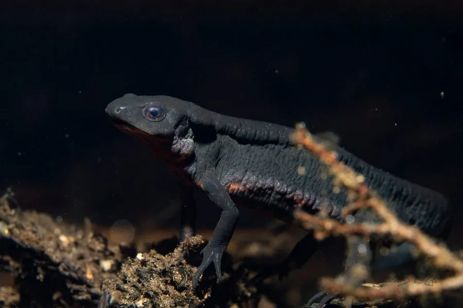

两栖动物 · 动物界
红腹蝾螈 Cynops pyrrhogaster

日本常见的蝾螈，腹部朱红并带黑斑，繁殖期体色更鲜艳，遇险时会翻露红腹警告天敌，皮肤毒素可刺激眼睛与伤口。
- 分类
- 门脊索动物门纲两栖纲目有尾目科蝾螈科属蝾螈属
- 栖息环境
- 日本的池沼、水田、溪流与山间静水水域
- 地理分布
- 日本本州、四国、九州及部分岛屿
- 保护级别
- IUCN 无危（LC）；日本受保护物种；非中国原产
物种志
红腹蝾螈体长 8–15 厘米，头部扁平，吻端钝圆，皮肤略粗糙，背面呈黑褐或灰褐色，腹面朱红色并缀有黑色斑块；繁殖期雄性尾部会长出侧鳍状结构，体色也更鲜明。它与东方蝾螈外形相近，但皮肤较粗糙，分布地区也不同。
它分布于日本的池沼、水田、溪流和山间水沟，成体以水生生活为主，夜间捕食水生昆虫、螺类、小虾和蠕虫。每年 3–7 月繁殖，雌螈把卵逐粒粘在水草上，每次产卵数十至上百粒，约 2–3 周孵化，幼体有外鳃，变态后上陆活动。它的皮肤腺体能分泌刺激性毒素，受威胁时会翻过身展示朱红色腹部，警告捕食者“我有毒”；在中国它属于外来物种，作为宠物饲养时不可随意放生。
形态与习性
- 食性水生昆虫、螺类、小虾和蠕虫
- 体长8–15 cm
- 寿命约 10–20 年
- 繁殖卵生，卵逐粒粘于水草，约 2–3 周孵化
- 活动节律夜行性，白天隐藏在水草石缝中
- 毒性皮肤毒素可刺激眼睛和伤口，接触后需洗手
趣味知识
- 红腹蝾螈受威胁时会翻过身，露出朱红色腹部警告天敌。
- 它的皮肤毒素具有刺激性，接触后不要揉眼睛或触碰伤口。
- 红腹蝾螈与东方蝾螈外形相似，但前者皮肤更粗糙，分布在日本。